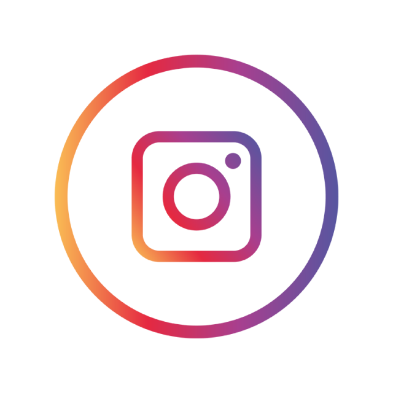
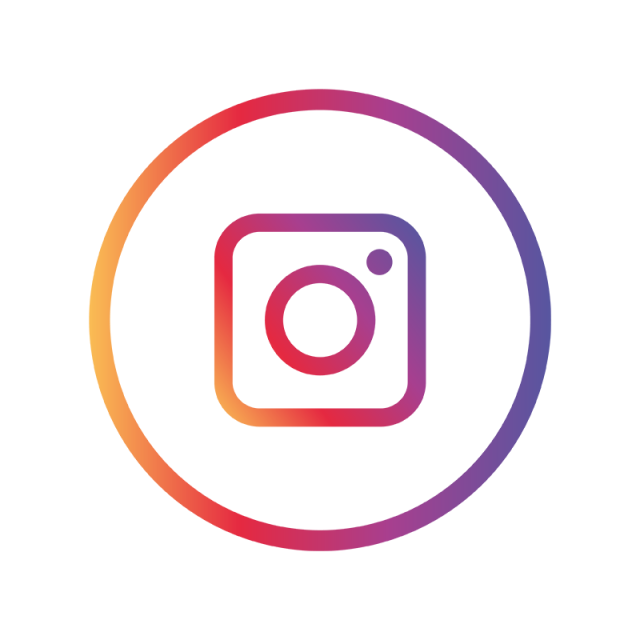

Olá!
Me chamo Évellyn Camatti!

Eu sou natural de Chapecó - SC,
felizmente sou filha única, há quem diga que isso não é bom,
mas eu gosto, não preciso dividir nada com ninguém! kkk
Eu me formei no Ensino Médio em 2019
hoje curso Bacharelado em Ciência da Computação na Universidade Federal da Fronteira Sul - Câmpus Chapecó.
Em outubro de 2021, tive a oportunidade de entrar na área de tecnologia,
comecei a trabalhar na Nibble, empresa do grupo Renovigi,
e agora posso dizer que faço parte do grupo Intelbras!
Estando na área percebo as dificuldades para sempre se manter atualizado,
pois todos os dias temos novidades que fazem a diferença!
Mas é exatamente isso que me faz gostar mais ainda do que eu faço!
Prazer, essa sou eu!